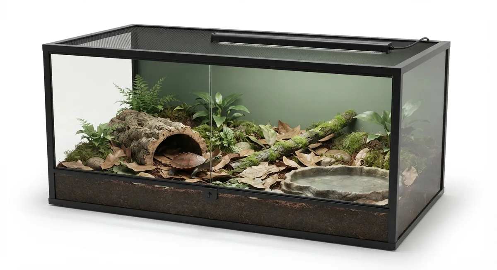

スペングラーヤマガメ・ヒラセガメ・ミツユビハコガメなど、湿った林床に暮らす森林性のカメ。湿度と隠れ家を軸に、実飼育の経験から飼い方を整理します。
森林性のヤマガメやハコガメは、薄暗く湿った林床、落ち葉の下や倒木のかげで暮らしています。水場でずっと泳ぐわけでも、乾いた草原を歩くわけでもなく、しっとりした地面の上を歩き、ときどき浅い水で体を潤す——これが彼らの暮らしです。飼育のコツは、この「湿った林床」をいかに再現するかに尽きます。
筆者はスペングラーヤマガメやヒラセガメ、ミツユビハコガメを飼育してきましたが、共通して大切だと感じるのは、保湿性の高い床材で適度な湿度を保つこと、しっかり身を隠せる隠れ家を用意すること、そして体が浸かれる浅い水場を置くことの3点です。強い直射日光より、木漏れ日のような穏やかな環境を好む種が多いのも特徴です。
野生では林冠に遮られた森の中に直射日光はほとんど届かず、林床に届く紫外線はごく弱い。強すぎるUVBは逆にストレスになる。飼育では環境温度22〜28℃・湿度70〜90%・UVBはUVI 1〜2（UVB2.0〜5.0相当・弱め）を目安にします。

このガイドで扱うヤマガメ・ハコガメの種別ページです。
飼っているカメの暮らしに近いガイドから、必要な機材を選んでください。